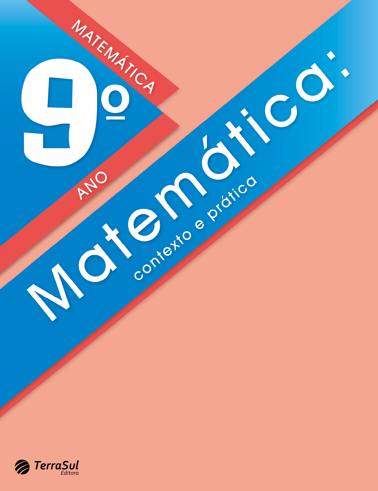

Licenciada em Matemática pela
Universidade
Federal do Paraná (UFPR). Mestre em engenharia de produção: Mídia e Conhecimento pela Universidade
Federal
de Santa Catarina (UFSC). Professora do Ensino Superior, tendo lecionado muitos anos nos ensinos
Fundamental
e Médio. Assessora editorial, prestando consultoria para diversas editoras na edição de conteúdo de
matemática voltado para os ensinos Fundamental e Médio.
©COPYRIGHT - 2022 - Terra Sul Editora Eireli. É
proibida a reprodução, mesmo parcial, por qualquer processo eletrônico, reprográfico, etc., sem
autorização
por escrito da autora e da editora.
Dados internacionais de catalogação na publicação
Bibliotecária responsável: Natália Vicente Montanha Teixeira (CRB-9/1642)
Lapa, Cintia Bagatin.
Matemática : contexto e prática : 9º ano :
livro digital-interativo do estudante / Cintia Bagatin Lapa ; ilustradores : Reinaldo Rosa e
Sérgio Bonfim
dos Santos. – 2. ed. – Curitiba, PR : Terra Sul Editora, 2022.
300 p. : il. ; 28 cm.
ISBN 978-65-5645-202-9
1. Matemática (Ensino fundamental) –
Estudo e ensino.
I. Rosa, Reinaldo. II. Santos, Sérgio Bonfim
dos. III. Título.
CDD (22ª ed.)
372.7
COORDENAÇÃO EDITORIAL
Jane Gonçalves
ILUSTRAÇãO
Reinaldo Rosa
Sérgio Bonfim dos Santos
CONSULTORIA
Ana Paula Gugelmin
ICONOGRAFIA
Raquel Deliberali
Victor Kubis
REVISÃO
Ariane Roldan Melchior
Eliane Peixoto de Lima
Silmara Lídia Moraes
Arcoverde
Sônia Maria Duarte
Thais dos Santos Pires
EDITORAÇÃO
ELETRÔNICA
Márcio Guesser
CARTOGRAFIA
Elisabeth Gislaine Rathunde
Lopes
Prezado aluno,
Esta coleção foi escrita para auxiliá-lo a descobrir como
a Matemática pode ser significativa e também prazerosa no
seu dia a dia.
Trata-se de uma ciência que nos ajuda a desenvolver
o raciocínio e a fazer descobertas, levando-nos a entender
melhor o mundo em que vivemos.
Pensando em atender suas expectativas e curiosidades,
convido-o a participar desta aventura, para que você possa
ampliar o seu conhecimento sobre os números, as opera-
ções, as formas geométricas, as medidas e tantas outras in-
formações que encontrará nas páginas deste livro.
Atente-se às orientações do seu professor, concentre-se
nas aulas e resolva as atividades. Dessa forma, você perce-
berá o quão gratificante é o aprender!
Bom estudo!
A autora
Prezado aluno,
Esta coleção foi escrita para auxiliá-lo a
descobrir como a Matemática pode ser significativa e também prazerosa no seu dia a dia.
Trata-se de uma ciência que nos ajuda a desenvolver
o raciocínio e a fazer descobertas, levando-nos a entender melhor o mundo em que vivemos.
Pensando em atender suas expectativas e
curiosidades, convido-o a participar desta aventura, para que você possa ampliar o seu conhecimento sobre os
números, as operações, as formas geométricas, as medidas e tantas outras informações que encontrará nas
páginas deste livro.
Atente-se às orientações do seu professor,
concentre-se nas aulas e resolva as atividades. Dessa forma, você perceberá o quão gratificante é o
aprender!
Bom estudo!
A autora
Conheça as seções do seu
livro
Converse
Na abertura das unidades apresentamos textos e
imagens que remetem aos assuntos que serão estudados. Convidamos você a conversar um pouco sobre estes temas
para saber qual o seu conhecimento prévio sobre os conceitos que serão estudados.
Encontre soluções
Nesta seção serão apresentadas atividades variadas
para serem resolvidas e jogos sobre os conceitos que estão sendo estudados.
Probabilidade e estatística
Esta seção trata da interpretação e análise de dados
em várias formas de apresentação, como gráficos e tabelas.
Relembre
Seção que finaliza a unidade. Nesta seção, você
poderá verificar, por meio de atividades, se os conceitos estudados na unidade foram assimilados.
Glossário
Encontra-se no final do livro e contém vocábulos que
podem ser desconhecidos, com as suas significações no contexto estudado. Essas palavras encontram-se
sublinhadas no decorrer do livro.
Troca de ideias
Neste ícone você será convidado a trocar ideias com
seus colegas e professor sobre questões que estão sendo propostas no início do estudo de um determinado
conceito. Neste momento, é possível criar estratégias próprias ou utilizar as convencionais, desenvolvendo a
imaginação, a criatividade e a capacidade de comunicar claramente suas conclusões; fazer estimativas mentais
de resultados ou cálculos aproximados.
Em duplas
São atividades que apresentam situações nas quais se
propõe que sejam resolvidas em duplas.
Calculadora
Este ícone sugere que seja usada uma calculadora para
resolver a situação proposta.
Calcule mentalmente
São apresentadas situações em que se sugere que o cálculo seja
realizado mentalmente.
Desafio
Neste ícone você encontrará atividades da Olimpíada
Brasileira de Matemática, podendo ser da OBMEP – Olimpíada Brasileira de Matemática das Escolas Públicas ou
da OBM – Olimpíada Brasileira de Matemática.
Jogos
Este ícone indica que é um momento para jogar. Por
meio do jogo, pretende-se o desenvolvimento simultâneo da capacidade cognitiva, de raciocínio, de memória,
entre outras, e você aprende brincando. Convide um colega e bom divertimento!
Conjuntos, potências e
radicais...............................10
CAPÍTULO 1 – Números irracionais 12
Número pi (π) 12
CAPÍTULO 2 – Números reais 16
Conjunto dos números reais 16
Operações com números reais 16
CAPÍTULO 3 – Potenciação 19
Propriedades da potenciação 21
Notação científica 26
CAPÍTULO 4 – Radicais 28
Radiciação 28
Potências com expoente racional 31
Propriedades dos radicais 33
Simplificando fatores do radicando 37
Operações com radicais 38
Multiplicação e divisão entre radicais com índices
diferentes 41
Racionalização de denominadores 43
Probabilidade e Estatística – Noções de
probabilidade 47
Relembre 50
CAPÍTULO 1 – Segmentos e proporções 56
Relembrando razão e proporção 56
Razões especiais 57
Proporção 57
Segmentos proporcionais 59
Paralelismo 62
Teorema de Tales 62
CAPÍTULO 2 – Figuras semelhantes 68
Polígonos semelhantes 68
Homotetia 73
Triângulos semelhantes 78
Probabilidade e Estatística – Análise de
notícia 82
Relembre 82
Semelhanças....................................................................................54
Produtos notáveis e
fatoração..................................86
CAPÍTULO 1 – Produtos notáveis 88
Quadrado da soma de dois termos 88
Quadrado da diferença de dois termos 90
Produto da soma pela diferença de dois termos 92
CAPÍTULO 2 –
Fatoração 95
Fator comum em evidência 95
Agrupamento 97
Diferença de dois quadrados 98
Trinômio quadrado perfeito 99
Probabilidade e Estatística – Situações com
base em gráficos......................102
Relembre 103
CAPÍTULO 1 – Equações 106
Resolução de equações do 2.o grau completas..................................................106
Soma e produto das raízes de uma equação do 2.o grau.............................113
CAPÍTULO 2 – Equações
biquadradas e equações irracionais 116
Equações biquadradas 116
Equações irracionais 117
Probabilidade e Estatística – Unidades de
medida utilizadas na informática......119
Relembre 121
Equação do 2.º grau e equação
biquadrada........................................................................................104
Triângulo
retângulo...............................................................124
CAPÍTULO 1 – Triângulo retângulo e as suas relações métricas 126
Relações métricas no triângulo retângulo 127
CAPÍTULO 2 – Teorema de Pitágoras 133
Medida da diagonal de um quadrado 140
Medida da altura de um triângulo equilátero 141
Probabilidade e Estatística – Juros simples
ou compostos.............................143
Relembre 145
CAPÍTULO 1 – Distâncias entre dois pontos e o ponto médio
de um segmento 182
Sistema de coordenadas 182
Distância entre dois pontos 183
Coordenadas do ponto médio de um segmento de
reta.............................185
CAPÍTULO 2 – Representando figuras espaciais 186
Vistas ortogonais 186
Desenhos em perspectiva 188
CAPÍTULO 2 – Noção de função 192
Gráficos de funções 197
Construção de gráficos de funções 198
Função afim 201
Análise e construção do gráfico de uma função
afim 202
Função quadrática 205
Análise e construção do gráfico de uma função
quadrática 206
Probabilidade e Estatística – Interpretando
gráficos 210
Relembre 213
Trigonometria...............................................................................148
CAPÍTULO 1 – Relações trigonométricas no triângulo retângulo 150
Seno de um ângulo 150
Cosseno de um ângulo 152
Tangente de um ângulo 154
Tabela de razões trigonométricas 155
Ângulos de 30°, 45° e 60° 162
CAPÍTULO 2 – Relações trigonométricas em um triângulo qualquer 169
Lei dos senos 169
Lei dos cossenos 172
Probabilidade e Estatística – Realizando uma
pesquisa amostral..................176
Relembre 176
Funções.................................................................................................180
Circunferência.............................................................................216
CAPÍTULO 1 – Ângulos na circunferência 218
Ângulo central 219
Ângulo inscrito 219
Outras relações entre ângulos e
circunferências..........................................222
CAPÍTULO 2 – Relações métricas na circunferência 224
Relação entre cordas 224
Relação entre secantes 226
Relação entre secante e tangente 227
CAPÍTULO 3 – Polígonos regulares inscritos na
circunferência e circunscritos a ela 231
Probabilidade e Estatística – Análise de
gráficos divulgados pela mídia.......239
Relembre 240
Áreas e volumes........................................................................242
CAPÍTULO 1 – Área de polígonos 244
Área do retângulo 244
Área do quadrado 245
Área do paralelogramo 246
Área do losango 247
Área do trapézio 248
Área do triângulo 253
CAPÍTULO 2 – Área de regiões circulares 256
Setor circular 256
Área do círculo 257
Área da coroa circular 260
Área do setor circular 261
CAPÍTULO 3 – Volume de prismas e cilindros 264
Volume de prismas 264
Volume de cilindros 266
Probabilidade e Estatística – Eventos
independentes e eventos dependentes....267
Relembre 269
Glossário 273
Referências 274
Sugestões de leitura 277
Anexos para reprodução 278
Respostas das atividades 285